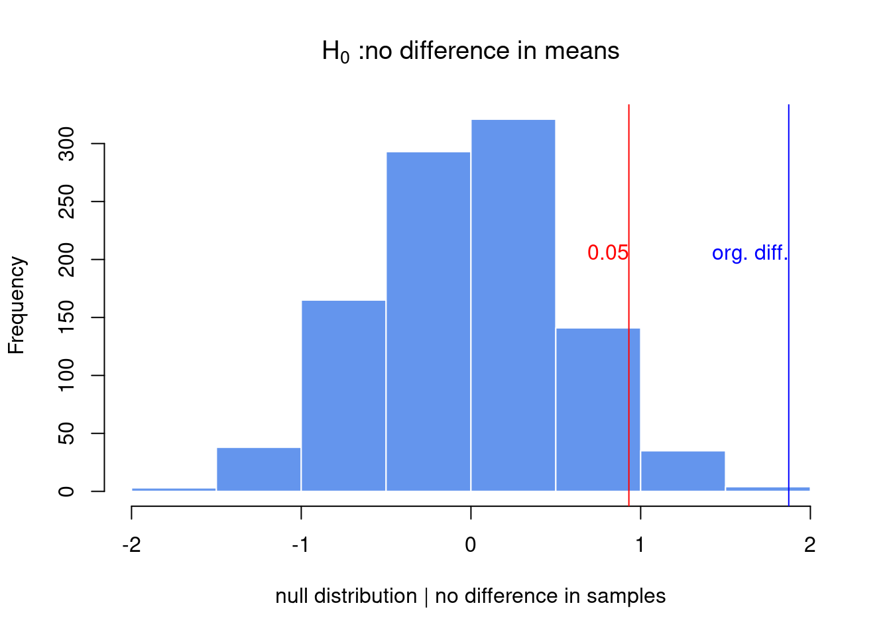
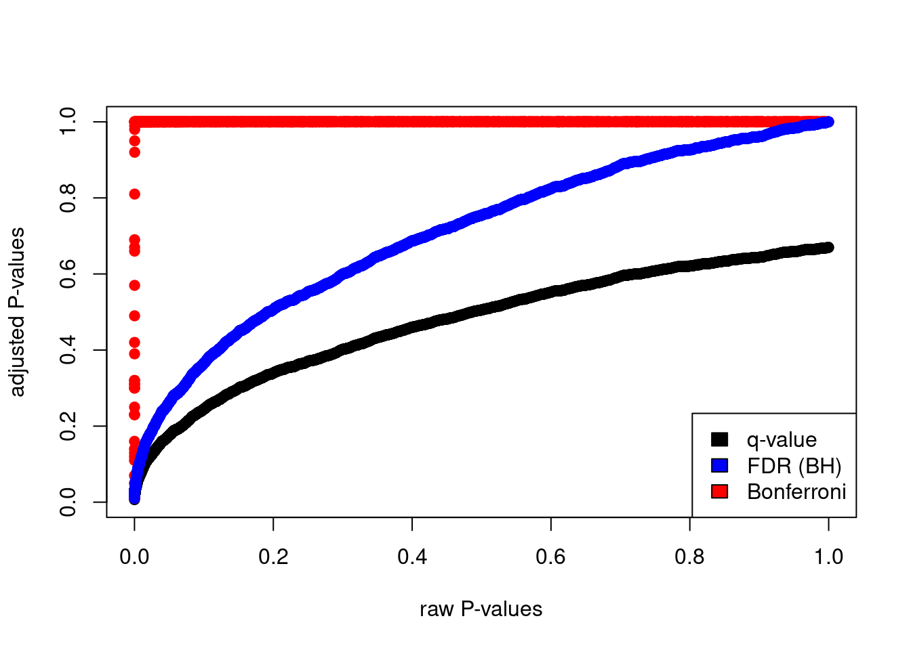
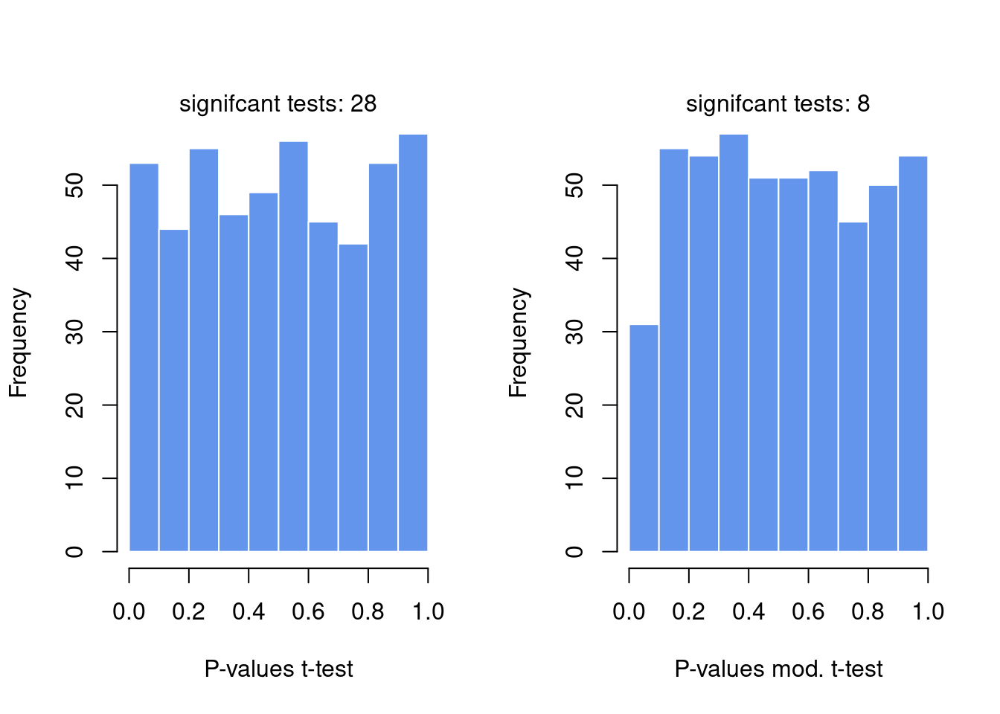

3.3 How to test for differences between samples
Variability in our measurements healthy samples are different from disease samples in some measurable feature (blood count, gene expression, methylation of certain loci).
- subtract the means of two samples
- hypothesis testing
“we can compare the real difference and measure how unlikely it is to get such a value under the expectation of the null hypothesis”
3.3.1 Randomization
set.seed(100)
gene1=rnorm(30,mean=4,sd=2)
gene2=rnorm(30,mean=2,sd=2)
org.diff=mean(gene1)-mean(gene2)
gene.df=data.frame(exp=c(gene1,gene2),
group=c( rep("test",30),rep("control",30) ) )
exp.null <- do(1000) * diff(mosaic::mean(exp ~ shuffle(group), data=gene.df))
hist(exp.null[,1],xlab="null distribution | no difference in samples",
main=expression(paste(H[0]," :no difference in means") ),
xlim=c(-2,2),col="cornflowerblue",border="white")
abline(v=quantile(exp.null[,1],0.95),col="red" )
abline(v=org.diff,col="blue" )
text(x=quantile(exp.null[,1],0.95),y=200,"0.05",adj=c(1,0),col="red")
text(x=org.diff,y=200,"org. diff.",adj=c(1,0),col="blue")
p.val=sum(exp.null[,1]>org.diff)/length(exp.null[,1])
p.val## [1] 0.0013.3.2 t-test
# Welch's t-test
stats::t.test(gene1,gene2)##
## Welch Two Sample t-test
##
## data: gene1 and gene2
## t = 3.7653, df = 47.552, p-value = 0.0004575
## alternative hypothesis: true difference in means is not equal to 0
## 95 percent confidence interval:
## 0.872397 2.872761
## sample estimates:
## mean of x mean of y
## 4.057728 2.185149# t-test with equal variance assumption
stats::t.test(gene1,gene2,var.equal=TRUE)##
## Two Sample t-test
##
## data: gene1 and gene2
## t = 3.7653, df = 58, p-value = 0.0003905
## alternative hypothesis: true difference in means is not equal to 0
## 95 percent confidence interval:
## 0.8770753 2.8680832
## sample estimates:
## mean of x mean of y
## 4.057728 2.1851493.3.3 Multiple testing
# BiocManager::install("qvalue")
library(qvalue)
data(hedenfalk)
qvalues <- qvalue(hedenfalk$p)$q
bonf.pval=p.adjust(hedenfalk$p,method ="bonferroni")
fdr.adj.pval=p.adjust(hedenfalk$p,method ="fdr")
plot(hedenfalk$p,qvalues,pch=19,ylim=c(0,1),
xlab="raw P-values",ylab="adjusted P-values")
points(hedenfalk$p,bonf.pval,pch=19,col="red")
points(hedenfalk$p,fdr.adj.pval,pch=19,col="blue")
legend("bottomright",legend=c("q-value","FDR (BH)","Bonferroni"),
fill=c("black","blue","red"))
3.3.4 Moderated t-tests
For example, if you have many variances calculated for thousands of genes across samples, you can force individual variance estimates to shrink toward the mean or the median of the distribution of variances.
How much the values are shrunk toward a common value depends on the exact method used. These tests in general are called moderated t-tests or shrinkage t-tests.
- One approach popularized by Limma software is to use so-called “Empirical Bayes methods”. The main formulation in these methods is
\[\hat{V_g}=aV_0+bV_g\]
\[V_0=\text{background variability (the prior)}\] \[V_g=\text{is the individual variability}\]
\[\hat{V_g}=\text{“shrunk” version of the variability.}\]
is the background variability and is the individual variability. Then, these methods estimate and in various ways to come up with a “shrunk” version of the variability. Bayesian inference can make use of prior knowledge to make inference about properties of the data. In a Bayesian viewpoint, the prior knowledge, in this case variability of other genes, can be used to calculate the variability of an individual gene. In our case, would be the prior knowledge we have on the variability of the genes and we use that knowledge to influence our estimate for the individual genes.
set.seed(100)
#sample data matrix from normal distribution
gset=rnorm(3000,mean=200,sd=70)
data=matrix(gset,ncol=6)
# set groups
group1=1:3
group2=4:6
n1=3
n2=3
dx=rowMeans(data[,group1])-rowMeans(data[,group2])
require(matrixStats)
# get the estimate of pooled variance
stderr = sqrt( (rowVars(data[,group1])*(n1-1) +
rowVars(data[,group2])*(n2-1)) / (n1+n2-2) * ( 1/n1 + 1/n2 ))
# do the shrinking towards median
mod.stderr = (stderr + median(stderr)) / 2 # moderation in variation
# estimate t statistic with moderated variance
t.mod <- dx / mod.stderr
# calculate P-value of rejecting null
p.mod = 2*pt( -abs(t.mod), n1+n2-2 )
# estimate t statistic without moderated variance
t = dx / stderr
# calculate P-value of rejecting null
p = 2*pt( -abs(t), n1+n2-2 )
par(mfrow=c(1,2))
hist(p,col="cornflowerblue",border="white",main="",xlab="P-values t-test")
mtext(paste("signifcant tests:",sum(p<0.05)) )
hist(p.mod,col="cornflowerblue",border="white",main="",
xlab="P-values mod. t-test")
mtext(paste("signifcant tests:",sum(p.mod<0.05)) )